Lesson: Useful QGIS Plugins
Now that you can install, enable and disable plugins, let's see how this can help you in practice by looking at some examples of useful plugins.
The goal for this lesson: To familiarize yourself with the plugin interface and get acquainted with some useful plugins.
★☆☆ Follow Along: プラグイン jpData
プラグイン jpData は、日本のさまざまデータをダウンロードし、マップキャンバスに追加することができるプラグインです。 本書の著者によって作成されています。 ダウンロードと追加以外にも、日本の地図を作るための多くの機能が備わっています。
国勢調査から好きな市町村をえらんで
小地域レイヤを追加します。layer from thetraining_dataGeoPackage.Install the QuickMapServices plugin.
Click on . The first menu lists different map providers (
OSM,NASA) with available maps.Click on an entry and you would load the base map into your project.
★☆☆ Follow Along: The QuickMapServices Plugin
The QuickMapServices plugin is a simple and easy to use plugin that adds base maps to your QGIS project. It has many different options and settings. Let's start to explore some of its features.
Start a new map and add the
roadslayer from thetraining_dataGeoPackage.Install the QuickMapServices plugin.
Click on . The first menu lists different map providers (
OSM,NASA) with available maps.Click on an entry and you would load the base map into your project.
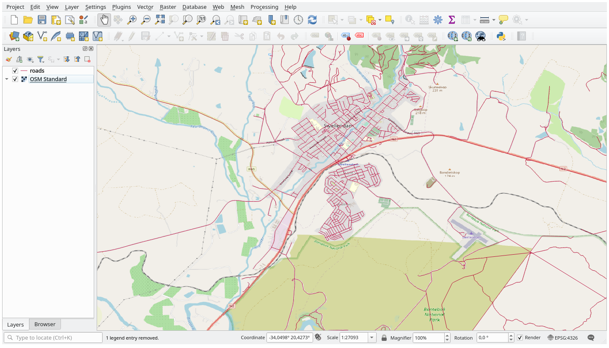
{kind=link}
Nice! But one of the main strengths of QMS is to provide access to many data providers. Let's add them.
Click on
Go to the More services tab.
Read carefully the message of this tab and if you agree click on the Get Contributed pack button.
Click Save.
Reopen the menu you will see that more providers are available.
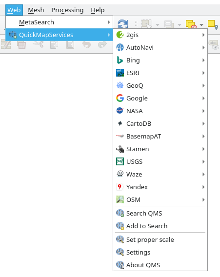
Choose the one that best fits your needs, and load the data in the project!
It is also possible to search through the now available data providers
Open the plugin's search tab by clicking on . This option of the plugin allows you to filter the available base maps by the current extent of the map canvas or using a search word.
Click on the Filter by extent and you should see one service available. If no service is found, zoom out and pan around the world (or your location) or search with a keyword.
Click on the Add button next to a returned dataset to load it.
The base map will be loaded and you will have a background for the map.
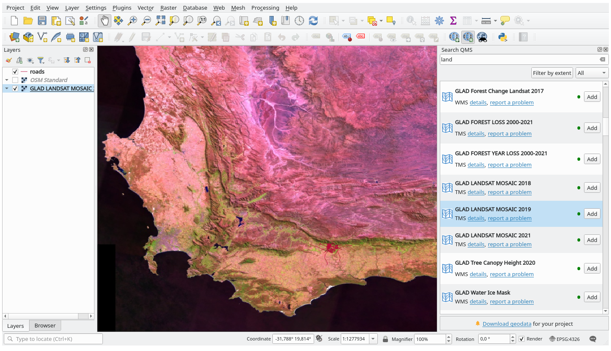
{kind=link}
★☆☆ Follow Along: The QuickOSM Plugin
With an incredible simple interface, the QuickOSM plugin allows you to download OpenStreetMap data.
★☆☆ Follow Along: Using the Quick Query
Start a new empty project and add the
roadslayer from thetraining_dataGeoPackage.Install the QuickOSM plugin. The plugin adds two new buttons in the QGIS Toolbar and is accessible in the menu.
Open the QuickOSM dialog. The plugin has many different tabs: we will use the Quick Query one.
You can download specific features by selecting a generic Key or be more specific and choose a specific Key and Value pair.
Tip
if you are not familiar with the Key and Value system, click on the Help with key/value button. It will open a web page with a complete description of this concept of OpenStreetMap.
Look for
railwayin the Key menu and let the Value be empty: so we are downloading all therailwayfeatures without specifying any values.Select Layer Extent in the next drop-down menu and choose
roads.Click on the Run query button.
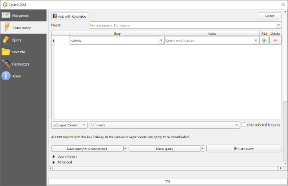
After some seconds the plugin will download all the features tagged in OpenStreetMap
as railway and load them directly into the map.
Nothing more! All the layers are loaded in the legend and are shown in the map canvas.
{kind=link}
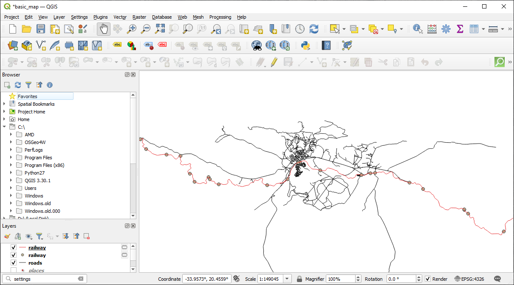
{kind=link}
★★★ Follow Along: The QuickOSM Query engine
The quickest way to download data from QuickOSM plugin is using the Quick query tab and set some small parameters. But if you need some more specific data?
If you are an OpenStreetMap query master you can use QuickOSM plugin also with your personal queries.
QuickOSM has an incredible data parser that, together with the amazing query engine of Overpass, lets you download data with your specific needs.
For example: we want to download the mountain peaks that belongs into a specific mountain area known as Dolomites.
You cannot achieve this task with the Quick query tab, you have to be more specific and write your own query. Let's try to do this.
Start a new project.
Open the QuickOSM plugin and click on the Query tab.
Copy and paste the following code into the query canvas:
<!-- This shows all mountains (peaks) in the Dolomites. You may want to use the "zoom onto data" button. => --> <osm-script output="json"> <!-- search the area of the Dolomites --> <query type="area"> <has-kv k="place" v="region"/> <has-kv k="region:type" v="mountain_area"/> <has-kv k="name:en" v="Dolomites"/> </query> <print mode="body" order="quadtile"/> <!-- get all peaks in the area --> <query type="node"> <area-query/> <has-kv k="natural" v="peak"/> </query> <print mode="body" order="quadtile"/> <!-- additionally, show the outline of the area --> <query type="relation"> <has-kv k="place" v="region"/> <has-kv k="region:type" v="mountain_area"/> <has-kv k="name:en" v="Dolomites"/> </query> <print mode="body" order="quadtile"/> <recurse type="down"/> <print mode="skeleton" order="quadtile"/> </osm-script>
注釈
This query is written in a
xmllike language. If you are more used to theOverpass QLyou can write the query in this language.And click on Run Query:
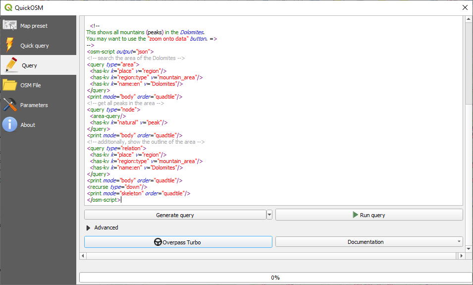
The mountain peaks layer will be downloaded and shown in QGIS:
{kind=link}
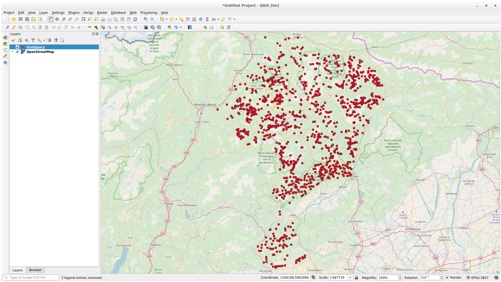
You can write complex queries using the Overpass Query language. Take a look at some example and try to explore the query language.
★☆☆ Follow Along: The DataPlotly Plugin
The DataPlotly plugin allows you to create D3 plots of vector attributes data thanks to the plotly library.
Start a new project
Load the
sample_pointslayer from theexercise_data/pluginsfolderInstall the plugin following the guidelines described in ★☆☆ Follow Along: jpData で国土地理院タイル searching Data Plotly
Open the plugin by clicking on the new icon in the toolbar or in the menu
In the following example we are creating a simple Scatter Plot of two fields
of the sample_points layer.
In the DataPlotly Panel:
Choose
sample_pointsin the Layer filter, cl for the X Field and mg for the Y Field: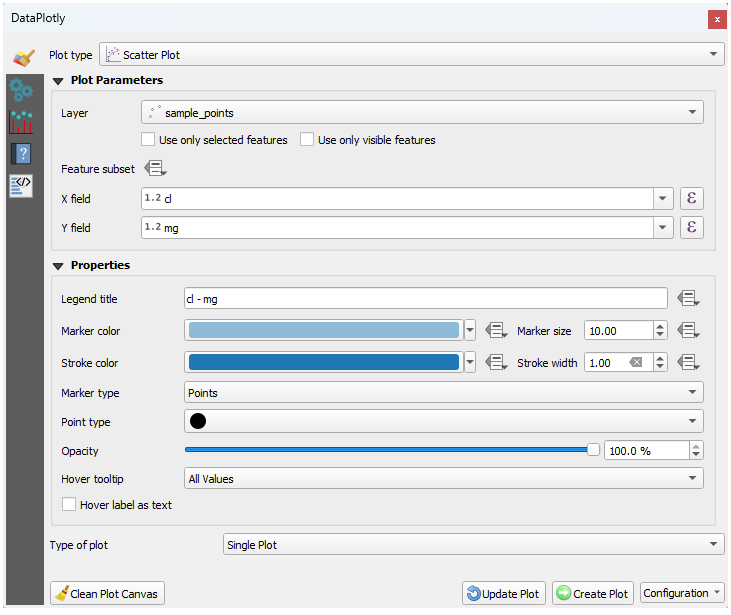
If you want you can change the colors, the marker type, the transparency and many other settings: try to change some parameters to create the plot below.
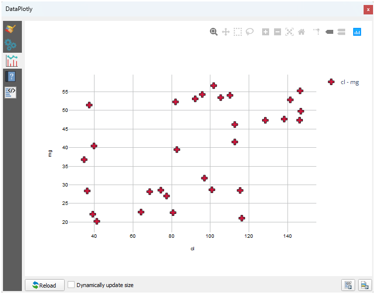
Once you have set all the parameters, click on the Create Plot button to create the plot.
The plot is interactive: this means you can use all the upper buttons to resize, move, or zoom in/out the plot canvas. Moreover, each element of the plot is interactive: by clicking or selecting one or more point on the plot, the corresponding point(s) will be selected in the plot canvas.
You can save the plot as a png static image or as an html file by clicking
on the  or on the button in the lower right corner
of the plot.
or on the button in the lower right corner
of the plot.
{kind=link}
There is more. Sometimes it can be useful to have two (or more) plots showing different plot types with different variables on the same page. Let's do this!
Go back to the main plot settings tab by clicking on the button in the upper left corner of the plugin panel
Change the Plot Type to Box Plot
Choose group as Grouping Field and ph as Y Field
In the lower part of the panel, change the Type of Plot from SinglePlot to SubPlots and let the default option Plot in Rows selected.
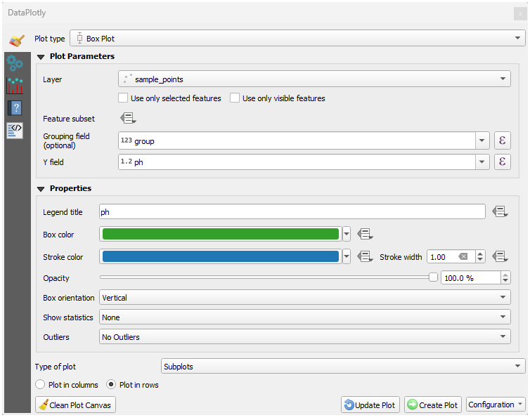
Once done click on the Create Plot button to draw the plot
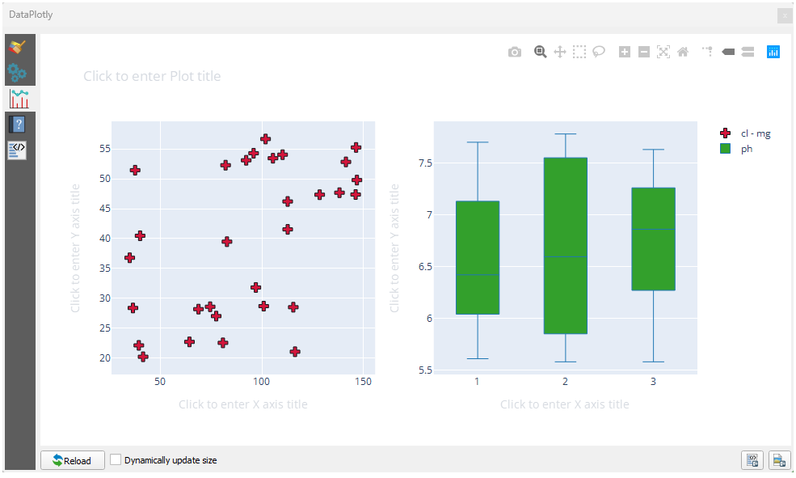
{kind=link}
Now both scatter plot and box plot are shown in the same plot page. You still have the chance to click on each plot item and select the corresponding features in the map canvas.
{kind=link}
In Conclusion
There are many useful plugins available for QGIS. Using the built-in tools for installing and managing these plugins, you can find new plugins and make optimum use of them.
What's Next?
Next we'll look at how to use layers that are hosted on remote servers in real time.